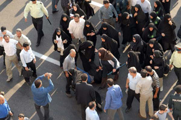
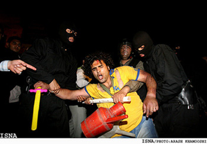

آنگاه که ارج آدمی در "اطاعت" او باشد، "خواستن" تاوانی بزرگ دارد تا تو نتوانی دست به انتخاب بزنی از آنرو که خرد انسانی را چنان به صلیب کشیده اند که گویی جز مطیع بودن چاره ای نداری.
در زمانه ای که فضیلت آدمی در بی صدایی اش باشد، همه کار می کنند: زندان، اعتراف، تعلیق، شکنجه، تهمت،...تا تو دیگر نیندیشی، تا باور کنی که باید "بی انتخابی " را انتخاب کنی...
اینجاست که اگر جانهایی آزاده نباشند تا بانگ بیدار باش سردهند امید از جامعه رخت برمی بندد مستبدان مجالی بیشتر می یابند تا به انسان چون جانوری رام شدنی بنگرند و هیچ نگونبختی بدتر از آن نیست که تو خود را زیر فرمان موجود دیگری از نوع خود بیابی بدانگونه که او بتواند ترا مجبور کند که بنا به میل و خواست او رفتار کنی.
هم از اینروست که تحصن قانونی و بی خشونت 6 دانشجوی آزاد اندیش، که در صبحگاه 18 تیر با قانون گریزی مسوولان به خشونت زندان می انجامد را می ستایم، درست زمانی که سیاستمدارن بر مدار مصلحت، حقیقت را ذبح می کنند و به نام قدرت کرامت انسان را نادیده می گیرند فریاد 6 دانشجو که به نام خدا بر می خیزند _ نه برای خواستن چیزی در این دنیا که وقار انسانی بازی با نام خدا را جایز نمی شمارد _شکوه انسان را به نمایش می گذارند .
تحصن آن شش نفر یاد آور حضور و ظهور انسان های راستینی است که در تاریخ استبدادی ما بارها قد علم کرده اند و اعتراض مسالمت آمیزشان شاهدی بر وجود بقایایی از" انسانیت" است؛ آن هم در زمانه ای که انفعال و مصلحت سنجی پاره ای از روشنفکران و سیاستمداران جایگزین حقیقت گرایی و حق محوری می شود. حرکت آنان در وضعیتی که نه تنها مخالفت، بلکه داشتن هرگونه اندیشه متفاوت نیز چون گناهی نابخشودنی نگریسته می شود - گناهی که اگر چه کیفری قانونی ندارد، می تواند با آزارهای گوناگون از فشارهای روانی گرفته تا رفتارهای خشونت آمیز خود سرانه همراه گردد - نویدی است بر توانایی انسان در اندیشه و عمل مستقل و منتقدانه. و این همه تهدیدی است برای استبدادی که به دنبال نفی همه صفاتی است که ما را "انسان" می کند .
در میان این 6 نفر دختری است که حضورش بسیاری را به تعجب واداشته است. بهاره از آن جمله آدمیانی است که مرزها را می شکنند و معنایی نو می آفرینند پیشتر در میان جمع زنان 22 خرداد و اکنون در میان جمع مردان 18 تیر، مفهوم دیگری از سنت شکنی را می نمایاند .
بهاره دختری است از هم نسلان من ، نسلی بزرگ شده در میان تناقضها، نسلی متفاوت از نسل های پیشین گرچه از او همانی را می خواهند که از نسل های پیش از او انتظار می رفت.
نسلی که دانشگاه را تجربه کرده است و در مقابل شور و شوق اش برای دانستن، هزارها کتاب ممنوعه وجود داشت حال آنکه در همان کتابهای غیر ممنوعه شور به دانستن اسرار در او بیدار شده بود !
نسلی که با آموزه "زگهواره تا گور دانش بجوی " شوق یادگیری اش تقدیس شد گرچه تلاش فراوان شد که مسیر گهواره تا گور را خودش انتخاب نکند!
نسلی که با آموزه " لا اکراه فی الدین " انتخاب را آموخت، گرچه در صف های اجباری نماز جماعت ایستاد و ایمانش با ریا به مصاف تردید برده شد!
نسلی که تشویق به درس خواندن شد و سیاستمدارانمان نیز با افتخار زبان به سخن گشودند که زنان ایرانی در دانشگاهها، هم پای مردان به افتخارات علمی نایل می شوند، گرچه تحقیرش کردند و اعتماد به نفسش را گرفتند با صدور حکم هایی چون: " دختران نباید در کلاسهای دانشگاه روی صندلیهای جلو بنشینند " که باعث تحریک برادرانشان نشوند!
نسلی که درس آزادی را از همان معلمانی فرا گرفت که تنبیه و توبیخ اش کردند به جرم عصیان و سرکشی ؛ و در کشاکش این همه معانی متناقض تعهدی بر پاسخگویی به پرسش هایش وجود نداشت!
نسلی که با شعار "آزادی " متولد شد ، گرچه با دستور العمل "فرمانبرداری " از او خواسته شد که بماند و در نبرد "جبر و اختیار" هویتش لگد مال شود.
بهاره صدای دخترانی است از نسل من ، دخترانی که می خواهند بگویند ما هستیم همانگونه که مادرانمان می خواستند باشند، همانگونه که مادرانمان با عشق مادرانه شان خانه را به فضایی امن برای آفریدن ارزشهای والای انسانی بدل کرده بودند، اکنون ما می خواهیم در جامعه، که عشق و ایثار مادرانه را از یاد برده است دست به باز آفرینی ارزشهای گمشده بزنیم.
بهاره صدای زنانی است از این نسل، که "انتخاب" را انتخاب کرد، گرچه برای انتخابش، انتظارمان را افزود، و اگر انتظارمان پاسخ نگیرد او منتظرمان خواهد ماند.
نمی دانم چگونه می شود پیشواز عاشقی رفت که خود، آفتاب عاشقان است؟
نمی دانم چگونه می شود پیشواز غریبی رفت که خود، ماه غریبان است ؟
نمی دانم آنگاه که برگی به بر توفانی می رسد چه می گوید؟
یا قطره ای از عشق آنگاه که به دریایی از عشق می رسد، چه می گوید؟1
1.شعر از شیرکو بیکه س ، شاعر کرد زبان

تازیانه هوشیاری
چند روز پیش وقتی عکس دلارام را در خبرها دیدم متعجب شدم و هنوز از این شوک در نیامده بودم که خبر بعدی را درباره عالیه اقدام دوست دیدم. هر دو به خاطر شرکت در مراسم22 خرداد سال 85 که بازداشت هم شده بودند حکم های سنگین گرفته اند، 2 سال زندان و10 ماه زندان و 10 ضربه شلاق به جرم اقدام علیه امنیت نظام وتشویش اذهان عمومی، و دیگری سه سال و 4 ماه و 20 ضربه شلاق !! آری انسان هایی را به جرم برابرخواهی به تحمل ضربات شلاق محکوم کرده اند آنهم در قرن بیست ویکم درزمانه ای که هزاران ان جی او(NGO)جهت حمایت ازحیوانات وجلوگیری از هرگونه آزار واذیت آنها شکل می گیرند و فعالیت می کنند.
امروزه درکشورما که دارای تمدن تاریخی 2500 ساله است ، در مقابل خواسته منطقی وطبیعی زنان ومردان روشنفکرجامعه که خواستار تغییر قوانین تبعیض آمیز میان زنان ومردان هستند، مواضع سختی گرفته می شود و آنها را به آنها اتهام اقدام علیه امنیت نظام وتشویش اذهان عمومی محکوم می کنند.
براستی دلارام ها و عالیه ها چه می خواهند که برایشان حکم زندان و شلاق می دهند. هرگز فراموش نمی کنم تصویر دلارام را در 22 خرداد امسال که چگونه محکم واستوارایستاده بود واز22خرداد 85 برایمان می گفت که چگونه نیروهای امنیتی کشور باتوم به دست آنها را تهدید می کردند که هرچه زودترصحنه را ترک کننداما وقتی مقاومت وپافشاری آنها را دیدند به آنها حمله کرده وبا باتوم به تن وجان مردم افتاده ودلارام عزیز مابا دستی شکسته توسط ماموران بر زمین کشیده می شد. ولی درهمان حال دلارام ها سرود ای زن ای حضور زندگی رابلند تروبلند تر می خواندند تا به جهانیان بگویند ما اقدام علیه هیچگونه امنیتی نمی کنیم وماخواهان ایرانی آزاد وامن هستیم و می خواهیم که در کشورمان همه انسانها از حقوق برابر برخوردار باشند وکمتر شاهد بی عدالتی در باره زنان باشیم .
بهاره در زندان
روز18تیر86 وقتی شنیدم که اعضای شورای مرکزی دفتر تحکیم وحدت به پاسداشت 18 تیر وحمایت از زندانیان دانشجو مقابل در دانشگاه پلی تکنیک پلاکارد به دست بر زمین نشسته اند ونیروهای امنیتی این تحصن 6
نفره را تاب نیاورده وبازداشتشان کرده اند، وقتی فهمیدم به دفتر ادوار تحکیم حمله کرده اند ودرساختمان راشکسته واعضای آن را بازداشت کرده اند، وبلاخره وقتی شنیدم بهاره هدایت درمیان جمع بازداشت شدگان است، تمام خاطراتی که در این چند سال با او داشتم جلوچشمم ظاهر شد. یاد روزی افتادم که به بهاره گفتم مبادا برایت مشکلی پیش آید واومثل همیشه خندید وگفت برای به دست آوردن هر چیزی باید هزینه داد. بهاره آگاهانه در این وادی قدم گذاشته است، برای مبارزه با ظلم وستم و نابرابری از هیچ اقدامی کوتاهی نکرده و همواره منافع خود را در منافع جمع دیده است و آنقدرمصلحت اندیش نیست که درمقابل نابرابری های موجود در جامعه سکوت اختیار کند.
از اعضای جنبش زنان هم هست، او را از 22 خرداد در صف جنبش زنان نیز دیدم و بعد در کمپین یک میلیون امضا. او کمپین را بهترین روش برای مبارزه با قوانین تبعیض آمیز می داند. او را می بینم در حسینیه ارشاد، با دلایل منطقی افراد را راضی می کند که بیانیه ها را امضاء کنند و امید را دل های نامید زنده می کند.
بهاره را در حمایت از دانشجویان زندانی نیز می بینم. محکم واستوارازدانشجویان زندانی می گوید، و از حق دانشجو واعتراض جنبش دانشجویی به نابرابری ها. از روزهای سختی که به دانشجویان زندانی می گذرد می گوید و نگران سلامتی آنهاست . می خواهد که همه مردم از آنها حمایت کنند.
می خواهم در اینجا با مادر بهاره هم حرف بزنم . برای او که روزهای سخت وپر اضطرابی را می گذارد استواری و استقامت آرزو کنم. ای مادر چون کوه محکم واستوار بایست ودر مقابل این نامردمی ها کمر خم نکن ومطمئن باش که بهاره نیز همین انتظار را دارد ما به مادرانی چون تو افتخار می کنیم که چنین فرزندان عدالت خواهی پروردیده اند.
دیروز برای حمایت از بهاره وباقی دانشجویان زندانی مراسم بزرگداشتی باحضور خانواده زندانیان برگزارشده بود وقتی از در سالن وارد شدم روی دیوار پر شده بود از عکس دانشجویان زندانی اما درمیان آنهمه عکس تصویر بهاره بیشتر از همه توجه ام را به خود جلب می کرد. چهره آرام، متین و همیشه خندانش برایمان یادآور روزهایی بود که پر شور وفعال در همه جا حضور موثر داشت .
دیروز اکثر سخنرانان با نام بهاره صحبتشان را آغاز می کردند وتاکید همه آنها بر صراحت کلام ، منطق قوی وحق گویی بهاره بود. ما دوستان بهاره نیز لحظه ای او را تنها نمی گذاریم وحمایتمان را نه تنها ازاو بلکه از همه دانشجویان زندانی ادامه خوا هیم داد .

سحرگاه 18 تیر ماه 1386، بار دیگر خلاقیت شورشی، تکانه ای ذهنی بر کالبدهای جامعه منفعلمان می دمد. خبر بازداشت اعضای مرکزی دفتر تحکیم وحدت، بهاره هدایت، محمد هاشمی، علی نیکو نسبتی، مهدی عربشاهی، حنیف یزدانی و علی وفقی به سرعت پخش می شود. آنها پلاکارد به دست نشسته اند روی زمین و درقاب تصویر با ما حرف می زنند. تحصن و تصویر تحصن آن 6 تن در ساعت 6 صبح دربرابر دانشگاه امیر کبیر بازآفرینی خلاقانه واقعیت کوی دانشگاه 1378 در برابر دیدگان فراموشکار است. این بار آنان هستند که به عکس نیروهای فشار بر ذهن ما یورش می برند و از ما می خواهند در برابر انفعال مسری دوران، خلاقانه مقاومت کنیم. ما را وامی دارند که 18 تیر کوی دانشگاه را فراموش نکنیم، ما را وا می دارند تلاش برای آزادی 8 دانشجوی دربند امیرکبیر را از یاد نبریم. آنها بی آنکه تحصن شان را اعلام عمومی کنند، حضور خود را عمومی می کنند تا ترس ها و مصلحت اندیشی ها را به مقابله بخوانند و بیهوده نیست که هزینه این حضور، نه تنها به بازداشت خودشان که به بازداشت 10 عضو دیگر و پلمب دفترادوار تحکیم منجر می شود.
در فضایی که اقتصاد دلالی و زیستن بر مبنای هزینه و فایده، در همه جوانب زندگی ریشه می دواند و در ژستی روشنفکرانه، منش سیاسی دوران می شود و هرگونه هزینه پردازی را - نه به دلیل فشار و سرکوب که به دلیل حفظ منافع اقتصادی، سیاسی و موقعیتی - غیرعقلانی توصیف می کند، و راه بر هر گونه تغییر را به تعویق می اندازد، حرکت آگاهانه آنان نشانه انتخاب آگاهانه شان علیه تقدیرگرایی ساری و جاری است. آنان نه به خاطر قهرمان سازی از خود و نه به خاطر افراطی گری که به خاطر شورش بر انفعال و منفعت طلبی دوران، ذهن ما را می آشوبند.
عمومی کردن حضور آنان در قاب تصویر، حتی بیش از شنیدن خبر تحصن آنان قدرت تاثیر گذاری دارد، شاید به این خاطر که آنان در این تصویر بر تصاویر متعارف دوران خود یورش می برند و ذهن ها را به حرکت وا می دارند. هیچ کس نمی تواند 18 تیر 78 را بدون تصویری از پیراهن خونین در دست احمد باطبی به خاطر بیاورد.

چه کسی می تواند تصویر کشیده شدن دلارام علی را روی زمین، ژیلا بی یعقوب دست بند به دست و ضرب و شتم مظلومانه زنان در 22 خرداد را از یاد ببرد؟

کدام روایت می تواند جایگزین تصویر چهره خونین دختری شود که به خاطر نوع پوشش اش مورد تهاجم پلیس قرار گرفته است؟

کدام روایت می تواند فراتر از تصویر خود به دار آویخته کارگری که اعتراض صنفی اش پاسخ نگرفته روایت گر درد و رنج و و استیصال و اعتراض باشد؟ کدام روایت می تواند خشونت خونین دولتی را فراتر از تصویر مردان آفتابه به گردن تصویر کند؟

کدام روایت می تواند جز تصویر نیمه ی بدن زنی یا مردی در خاک ذهن را از خشونت سنگسار مشمئز کند؟
/ جایی که رسانه های رسمی از افتتاح و استقبال می گویند و اعتراض ها را پنهان می دارند، و یا در شکل عوام فریبانه ، اخبار مخملین! «هشت و سی» 8.30 تولید می کنند تا تحریف و واژگون نمایی را خبرسازی جلوه دهند، این تصاویر سمج و ماندگار که روز به روز بر تعدادشان افزوده می شود چون «کلاه کلمنتیس» چشم ها را می آزارد و لابد خواب ها را هم پریشان می کند. تصاویر دلارام ها و احمد باطبی ها ایجاد ترس می کنند، زیرا هرگز درپس پاسخ های زیرکانه سیاستمداران پنهان و تلطیف نمی شوند، این تصاویر برش هایی از حقیقتی هستند که همواره سعی در مخفی کردن آن می شود، تصاویری که هیچ لبخند توجیه گر رسانه ای و جملات طلایی ورویایی نمی تواند خشونت آشکار موجود در آن ها را پنهان بدارد، تصاویری از واقعیت که ذهن ها را هوشیار می طلبد..
زیر سایه کودتای خزنده
طی چند ماه اخیر حمله ها به افراد و گروه های اجتماعی شدت گرفته است، کودتای خزنده امنیت نرم به حمله های مسلسل وار برای مستاصل کردن ذهن و دامنه عمل فعالان جنبش های زنان، سندیکایی و دانشجویی وحقوق بشر بدل شده که از طریق احضار به دادگاه و صدور حکم های سنگین چون شلاق و حبس و بازداشت های غیرقانونی امتداد یافته و گسترش می یابد. بازداشت هاله اسفندیاری و مممنوع الخروج کردن نازی عظیما، اعلام صدور حکم های غیر منتظره برای فعالان جنبش زنان ، دلارام علی و عالیه اقدام دوست، در بند ماندن 8 دانشجوی دانشگاه امیرکبیر، بازداشت اعضای دفتر تحکیم به همراه شلیک هوایی بسان حمله به خانه های تیمی! و پلمب دفتر این نهاد دانشجویی، بازداشت منصور اسانلو رهبر سندیکای شرکت واحد و امیر یعقوبعلی از اعضای کمپین یک میلیون امضا، از جمله حرکت های پرشتاب منجیان امنیت برای گرفتن مجال تنفس مدنی از فعالان جامعه مدنی بوده است. این حرکت به نظر نمی آید که پایان بیابد. امنیت گران ما خیز برداشته اند تا پیشاپیش، از همین تابستان گرم آغاز کنند و تا 16 آذری فرا نرسیده، تا 8 مارسی در راه مانده، تا نطفه ای برای اعتراض صنفی بسته نشده، تا اندیشه ای برای بهره گیری از فرصت انتخاباتی برای طرح مطالبات مدنی به کار نیفتاده، فرصت حرکت را از ما بگیرند و لابد در یک فضای انتخاباتی کنترل شده برای دیدن تجمع پلیس در روزهای تاریخ ساز جنبش های مدنی به تماشا بایستند!
سایه این امنیت نرم نظامی چنان گسترده است که برای عادت دادن چشم ها به ترس و نظم نظامی، ابزاری به نام مبارزه با «بدحجابی» و «اوباشی» گری لازم است تا قدرت نمایی حافظان امنیت را به منصه ظهور برساند تا اگر گربه ای دم حجله ایستاده است راه خود را برود. وگرنه، مسئولانمان نیز خودشان می دانند که اگر مخالفت با بی حجابی و بعد بدحجابی در سال های نخستین انقلاب حرکتی ارزشی و ایدئولوژیک تصور می شد اکنون حتی برای مجریان کنونی قانون نیز از آن معانی تهی است و برای مخاطبان آنها که غالباً زنان و دختران جوان انقلاب ندیده در عصر آرامش هسته ای هستند، نوعی قدرت نمایی ظاهری و فاقد مشروعیت با پایه های متزلزل ایدئولوژیک است. اکنون هم مجریان و هم خود زنان می دانند که از این برخوردهای قدرت نمایانه نه ارشادی پاسخ می دهد و نه مرشدی تلاش برای قانع کردن می کند. به واقع آن سبو مدت هاست که ریخته و پیمانه اش شکسته است - حتی ماموران اجرایی نیز گاه به جای فرمان گرفتن از دستورات، دستورات را دور می زنند - اما بر این شکسته بسته ها، هم می توان اشتغال زایی خدماتی کرد و عده ای را به کار گماشت و هم می توان دلیلی برای نظامی کردن مداوم فضای شهری یافت. شاید بتوان گفت که بحران آفرینی یک شبه بر سر بنزین و زمینه سازی برای بروز خشم عمومی و به کار گماشتن پلیس برای برقراری نظم تا حدودی تثبیت حضور پلیس در شهر و مراکز عمومی و بیش از آن تلاشی برای مشروعیت بخشی به فقدان مشروعیت بود ..
بی هراسی از پروژه هراس سازی
اکنون ما مانده ایم و این گستره امنیتی در برابرمان. آیا باید بترسیم و عزلت گزینیم یا چون بسیاری که که عرصه برایشان تنگ شد رخت هجرت ببندیم؟ آیا باید وحشت زده شویم از احضار و بازداشت و بازجویی و زندان و تعزیر و تعلیق و شلاق و انتظار حبس های طولانی برای تک تک مان یا در برابر این فضای پرحصار مقاومت کنیم و صدایمان را در عرصه عمومی شنیدار کنیم؟

به تصاویر بازداشت شدگان دانشجویی، زنان و سندیکایی می نگرم، به آرامش و استواری این شجاعان اندک و پرقدرت خیره می شوم. آیا سرکوب و خفقان در همه مواقع پاسخ می گیرد؟ به نظر می آید استراتژی نظام در سرکوب فعالان اجتماعی دیگر چون گذشته عمل نمی کند. در گذشته هر پاتکی بر فعالان جامعه مدنی یا سیاسی ریزشی گسترده در پی داشت، برخی را ناگزیر به هجرت می کردند، برخی را زندانی و دربند، برخی را منزوی در خانه. در واقع، بی مکان کردن فعالان جامعه مدنی در ممانعت از جمع شدنِ مستقل و سازمان یافته ی آنان از جمله هدف های دراز مدت حاکمیت در برابر جنبش ها و نهادهای مدنی بوده است. از بزرگ ترین نوع این حمله ها می توان از حمله به دفاتر گروه های ملی – مذهبی اشاره کرد که به شدت و سیستماتیک دنبال شد. قدرت گرفتن بسیج دانشجویی و محدود کردن فعالیت های انجمن های اسلامی و بعد هم بازداشت مسئولان نشریات دانشجویی، حمله به دفاتر سندیکاها، پلمب کردن دفاتر نهادهای مدنی و اکنون دفتر تحکیم وحدت همه از برنامه های طراحی شده امنیت گران ماست که هربار چون زلزله ای فرود می آید تا حرکتی را خاموش کند. درواقع هر گونه مکانی برای جمع شدن و سازمان دادن به یک جریان، به مثابه تولید تفکر و ثبات و به معنی قدرت تاثیرگذاری، خواب امنیت گران ما را آشفته می کند و ماشین کنترل را به کار می اندازد با این باور که با هر پاتکی عده ای کنار زده خواهند شد و از بزرگ شدن یک جریان نیز ممانعت به عمل می آورند.
به نظر می آید چنین باوری در حکومت داری کلاسیک پاسخ می گیرد و تا حدودی هم با خاموش کردن یک گروه یا دسته یا حرکتی، آرامشی زود گذر برقرار می شود. اما در دوران کنونی که جنبش های مدنی بی مکانی شان را در اتحاد و ائتلافشان با دیگر جنبش ها جبران می کنند و سایه حمایتی شان را بر روح و جان یکدیگر می ریزند، و با عمومیت بخشیدن به خواسته ها، خانواده ها را نیز در گیر مسائل جامعه شان می کنند و آنها را از پاسداری یک خانواده مقدس و منزوی به شکل دادن یک خانواده فعال سوق می دهند؛ دیگر نمی توان از بی مکانی و بی جایی هراسید. اکنون در خانه های ما جنبش هایی برپاست که توقف را در آن جایی نیست. اکنون برخلاف تصور استراتژیست های سرکوب، در برابر سرکوب مداوم، مقاومت مداوم جریان دارد زیرا شدت گیری های خشونت ورزی دولتی وقتی چنین عریان و مستقیم وارد می شود، تاثیر عکس بر عملکرد دولت مشروع می گذارد و ترس ها را به شجاعت تبدیل می کند به همین خاطر دیگر چون گذشته سرکوب مداوم ترس و ارعاب و وحشت مداوم ایجاد نمی کند، این مقاومت آگاهانه و آماده برای پرداخت هزینه بی آنکه خاموش شود هربار از جایی سر می زند.
به تصاویر بهاره هدایت، عبدالله مومنی، دلارام علی، منصور اسانلو، عالیه اقدام دوست...خیره می شوم. آنها را چگونه تعریف کنم؟ فعال دانشجویی، جنبش زنان، سندیکایی؟ یا همه آنها؟ دلارام ها و بهاره ها و مریم ضیاها، اسانلو ها و مومنی ها و... را آیا می توان در یک هویت خلاصه کرد؟ در این هم پوشانی زیبای جنبش های اجتماعی قدرتی بزرگ نهفته است که به ما ایمان و ایستادگی و حرکت می بخشد، اتفاقی میمون که استراتژیست های سرکوب را به استیصال و وحشت می کشد تا سرکوب ها را شتاب بخشند.
به تصاویر خیره می شوم، خلاقیتی شورشی اما مسالمت آمیز، آگاهانه و پرقدرت پیش می رود و «هراس» را به هراس می اندازد. رعبی در میان نیست، گرمی هست و شور و عشقی که جامعه انفعال زده را گرما می بخشد. اکنون برماست که این قلب تپنده را از جریان نیاندازیم.

"دنیا " پس از یک ساعت به بند بازگشت. آرام از کنار تختم که بالای تخت "زهرا" بود، رد شد. با چشمان نمناک نگاهی به من کرد و گفت: «خب خانوم طلوعی جان، اینبار هم گناهانم پاک شد، حالا تا دفعه دیگه»
پرسیدم: «دفعه دیگه؟ مگه قراره بازم برگردی؟»
کنار تخت اش رسید و درحالی که ناله می کرد، دمر روی تخت خود را رها کرد. همه ما زندانی های آن بند دورش جمع شدیم. پیراهنش را بالا زد و پشتش که یک تکه کبود و متورم و زخمی بود، نمایان شد. خون روی زخم های حاصله از رد شلاق دلمه بسته بود. زهرا سعی کرد بدون توجه به آه و ناله های او و دردی که می کشید، روی زخم هایش کمی پماد بمالد تا شاید تسکین پیدا کند. مامور اجرای حکم تعزیر، بدجوری ضربهها را فرود آورده بود و هر قدر «دنیا» بیشتر از درد نالیده بود، مجری حکم بیشتر کیف کرده و محکم تر زده بود.
کنارش نشستم و غمگین نگاهش کردم. سرش را بلند کرد و با تانی و با لبخندی تلخ در جواب سؤالم گفت: «معلومه که برمی گردم. کجا رو دارم که برم؟ بیرون از اینجا که کسی منتظرم نیست. خونهای هم که ندارم، باید برم تو همون سطل آشغال».
- سطل آشغال؟ منظورت چیه؟
- ای بابا خانم دکتر جان، دلت خوشه ها. من که مثل شما خونه زندگی و آزمایشگاه ندارم. باید شبا برگردم تو همون سطل آشغال بزرگه تو سعادت آباد تهران.
خیلی درد داشت. ناله می کرد. زمان مناسبی برای درددل نبود. باید سؤال هایم را می گذاشتم برای فرصت مناسبی که درد و التهابش تخفیف یافته باشد.
حکم زندانش تمام شده بود که بردنش دادگاه تا حکم شلاق اش را اجرا کنند. خانم تقی پور او را برد. مهربان تر از سایر زندانبان ها بود. سمیرای 18 ساله زیرلب زمزمه کرد: «کاش شلاق رو خانم تقی پور بزنه. اون خیلی محکم نمی زنه». خانم تقی پور شنید. برگشت و گفت: «اما اگه یواش بزنم قبول نمی کنن . میگن حد جاری نشده. حالا می برمش. خدا کنه سرباز نداشته باشن، بگن خودم بزنم.» ولی ظاهرا" از شانس بد «دنیا» سرباز آنجا بود و حکم را او اجرا کرد. حالا دنیا حکم اش تمام شده بود اما باید برای پرونده کتک کاری "آوات"، زن جوان 18 ساله متهم به قتل همسرش که حکم قصاص هم داشت، حالا حالاها در زندان می ماند تا وقتی که دادگاه این یکی پرونده اش نیز برگزار شود یا این که آوات رضایت بدهد. گویا دنیا به همراه دو زندانی دیگر و بنابر تحریک زندانبانی که از آوات دل خوشی نداشته، زن بیچاره محکوم به اعدام را تا سرحد مرگ زده بودند. زندانبان قول داده بوده مسئله را گزارش نکند و قضیه مخفی بماند. اما کتک زدن آوات چنان وحشیانه صورت گرفته بود که پزشک زندان با معاینه زن نیمهجان موضوع را فهمیده و گزارش کرده بود. بعدها هم آوات شکایت کرده بود که البته در نهایت نتیجه شکایت تغییر محل خدمت زندانبان، و تبعید خود آوات افسرده به زندان قروه بود که بنابر گفته زندانی ها بسیار بدتر از زندان سنندج است و مسلما" در آن جا آوات افسردهتر خواهد شد.
دنیا از این که برای خوشخدمتی به زندانبان و کمی امتیاز گرفتن، آن زن بیچاره را کتک زده بود، پشیمان بود. آوات هم به هیچ عنوان رضایت نمی داد.
در زندان به روشنی می دیدم که چطور خشونتی که علیه این زنان دردمند روا می شود، توسط خودشان نیز بازتولید می شود و در نهایت این خشونت ها را علیه یکدیگر بکار می برند. اما به راستی مگر چه نوع زندگی غیر از همین دور بسته خشونت را تجربه کرده بودند؟ در بندی که اکثرا" جاسوسی همدیگر را می کردند و هیچ کس به دیگری اعتماد نداشت، هر از گاهی فریادی بلند می شد و شیشه بود که خرد می شد و دست هایی که با خودزنی غرق خون می شد. دنیای بیرون از زندان و داخل زندان این زنها آکنده از خشونت و فقر بود.
بالأخره فرصتی پیدا کردم که با دنیا صحبت کنم. برایم از زندگی اش گفت. پدر معتادش تن او را می فروخت و پول این تن فروشی را نیز خودش می گرفت. دنیا گفت از برادر خودش حامله شده و پسری دارد. رضا کوچولوی بی گناهی که به یک قاچاقچی در سیستان و بلوچستان فروخته شده و تنها آرزوی دنیا پیدا کردن پسرش بود که الان باید چهار سالش شده باشد. دنیا از خانه پدری بیرون می زند و تصمیم می گیرد لااقل پول تن فروشی را خودش استفاده کند. اما نتیجه اینکار او نیز در نهایت خوابیدن در یک سطل آشغال بزرگ در سعادت آباد تهران بود. بخاطر می آورد که شبی یکی از اهالی محل غافل از اینکه زن بی پناهی در سطل زباله خوابیده شیشههای شکسته را درون سطل ریخته و تمام سر و صورت دنیا زخمی و خونین شده بود.
همانطور که به سرنوشت غم انگیز دنیا فکر می کردم برنامهی تنها تلویزیون بند توجه ام را جلب کرد. گوینده داشت در باره خمس و زکات و اقتصاد اسلامی حرف می زد...
***
چندی بعد نوبت " گلاله " شد که برای حکم شلاقش به دادگاه برود. این زن جوان نوزده ساله نیز همچون دنیا، گریان و با پشت کبود و دردناک به بند بازگشت. تنها یک مسئله شادش می کرد و وسط آن همه درد ناگهان لبخند به لبش می آورد. چشمانش از شادی برقی می زد و می گفت: «آخی، دیگه تکلیفم معلوم شد. حالا از زندان می رم بیرون.» بعد دوباره جشمانش پر از اشک می شد و زیر لب می گفت: «آخ فرزین...» و باز هم هق هق گریه را سر می داد.
فرزین کوچولوی سهماهه، فرزند نامشروع گلاله بود که همین دو روز پیش به بهزیستی منتقل شده بود. گلاله که خود فرزند طلاق در یک خانواده نابسامان بود در جریان تن فروشی از سر فقر، ناگهان حامله شده بود. دوران بارداری و زایمان را در زندان گذرانده بود چرا که مادرش او را به نیروی انتظامی تحویل داده بود.
هر از چند گاهی که پوشک بچه و یا شیر خشک فرزین کوچولو تمام می شد و فرزین گرسنه با گریههایش مادر را کلافه می کرد ، گلاله که از انتظار شیر خشک و نرسیدنش دیوانه شده و بهسرش می زد، ناگهان فریادش همه بند را برمی داشت و فرزین بینوا را هم روی سیمان سرد جلوی دفتر زندانبان می گذاشت و فریاد می زد: «ببریدش بهزیستی. من نمی تونم بچه گرسنه اینجا بزرگ کنم». گلاله حکم زندان نداشت و فقط حکمش شلاق بود. اما تا تعیین نتیجه آزمایش پترنیتی اش او را در زندان نگه داشته بودند! و البته پدر اصلی بچه هم متواری بود. به خاطر دارم روزی گلاله در اعتراض به زندان بدون حکم اش، خودزنی کرد. مسئول بند نسوان شخصا" آمد و گلاله زخمی و بی پانسمان را با دستبند و پابند به چهارسوی تخت بست و کودک گرسنهاش را روی زمین کنار تخت گذاشت. دستور صادر شد که هیچ یک از زندانیان حق ندارد به کمک کودک گرسنه بشتابد. زندانی هایی که بدین شیوه تنبیه می شدند اغلب باید ادرارشان را بر همان تحت خالی می کردند چون آنها را حتا برای رفتن به توالت نیز از تخت باز نمی کردند. برخی زندانی ها برایم گفتند که جلوی آفتاب سوزان تابستان یا در شب سرد زمستانی هنگام ریزش برف با لباس نازک کوردی در حیاط آگاهی(جهت فشار برای اعتراف به قتل نکرده) و یا در زندان به تخت یا دیوار بسته شده بودند. آنچه در مورد گلاله روا می شد نه تنها شکنجه او بلکه شکنجه نوزاد سه ماهه اش و نیز شکنجه ما زندانیانی بود که باید این صحنه زجر آور را تحمل می کردیم.
خوشبختانه پس از یکساعت من به دادگاه فراخوانده شدم و تا برگشتنم شکنجه گلاله به پایان رسیده بود. یعنی حدودا" 4 ساعت مادر جوان و کودکش و دیگر زندانیان، این وضع را تحمل کرده بودند.
***
به یاد دارم روزی با آه و ناله و استغاثه زن جوان زیبایی که چندی پیش همراه دوستش در منزل دو پسر دانشجو دستگیر شده بودند (و البته آقایان را آزاد و خانم ها را راهی زندان کرده بودند) از خواب پریدم. زن جوان بر جانماز ناله می کرد و می گفت: «ای خدا اگر براستی وجود داری کمکم کن تا از اینجا خلاص شم. خدایا به همان کوچه پس کوچهها راضیم اما منو از این جهنم ببر بیرون». گریههایش بدجوری به دلم اثر کرد. پای درددلش که نشستم فهمیدم از شوهر بسیار خشنی که دست بزن داشته و البته به زور نامادری به عقد او درآمده بود، طلاق گرفته و بعد از اینکه نامادری هم بیوه جوان را به خانه اش راه نمی دهد، آواره خیابان ها می شود. طبعا" در ایران که هیچ درآمد و تأمین اجتماعی و حمایت دولتی یا خانه ای امن برای زنان در چنین مواقعی وجود ندارد، عاقبت این زن جوان بسیار زیبا هم معلوم است که به کجا خواهد کشید. شراره برایم گفت که چه شب ها که تا صبح مشتری نداشته و ناچار بوده خیابانها و کوچههای سرد را طی کند تا حمام عمومی باز شود و از ساعت هشت صبح تا دوازده ظهر زیر دوش آبگرم نمره حمام کمی بخوابد. او فقط از خدا می خواست که او را به بهزیستی نفرستند، چون وضع بهزیستی را بهمراتب بدتر از زندان می دانست. دعا می کرد زودتر شلاق را بخورد و پی کاسبی اش روانه شود. یادم هست که مینا به او توصیه کرد وقتی شلاقش می زنند، آه و ناله نکند چون سرباز مجری حد، لذت می برد و محکمتر ضربه ها را فرود می آورد!
روزی که داشتم آزاد می شدم شراره از من پرسید: «وقتی که آزاد شد کجا بره؟» گفتم: «برو بلوار، از دم اداره منابع طبیعی بپیچ دست چپ تا آخر خیابون می رسی به حفاظت اطلاعات نیروی انتظامی. بگو می خوای سرهنگ .... را ببینی. به او بگو طلوعی گفت بیام پیشت و به حرمت بخیههایی که در جبهه بر جمجمهات نقش بسته و بهش خیلی مینازی، ازت بخوام حالا که رویا و نگین رو بارها همینجا احضار و بازجویی کردی و بهشون هم مجوز ان جی او ندادی، و آخر سر هم دستگیرش کردین، پس حالا مسلمان خوب و معتقدی باش و اگه راست میگی که خانه امن زنان و ان جی او زنان بد است، پس به من یه سرپناه بده که زنهای بی پناهی مثل من آواره خیابونا نشن و ناچار به تن فروشی نباشن.»
***
امروز حدود دو سال از آن روزهای تلخ گذشته. تازه برای من کورد، بند نسوان زندان سنندج در مقایسه با انفرادی اطلاعات، بهشت بود. در اطلاعات یکی از موارد بازجوئی ام این بود که دختر جوان مریوانی را که در خطر قتل توسط خانواده اش قرار داشت و چند ساعتی پیش من در دفتر ماهنامه بود به چه حقی پناه داده ام؟ من آن موقع توی دلم می گفتم خدا رو شکر که خبر ندارند "کاله" بیچاره که از کوردستان عراق گریخته و در معرض قتل ناموسی بود را نیز پناه دادم. لابد اگر می دانستند، جرم جاسوسی به جهت نجات جان یک زن کورد عراقی در معرض قتل ناموسی هم به پروندهام اضافه می شد!
و در پایان یادی می کنم از زهرا زن میانسالی که به جرم حمل مقداری مواد مخدر پنج سال پیش دستگیر و حکم اش از اعدام به ابد تخفیف یافته بود و البته همیشه تعریف می کرد که از فرط فقر ناچار به حمل آن مواد در مقابل هشتاد هزار تومان شده که خرج بچههای گرسنهاش را تأمین کند. فقر خانواده زهرا را به چشم دیدم چرا که دختران نوجوانش حتی پول کرایه صندلی مینی بوس از قروه با فاصله یکساعت از سنندج را نداشتند که به ملاقات مادر بیایند، مادری که در زندان بافتنی می کرد و اندکی پول برایشان فراهم می کرد. زهرا پنج سال بود بیرون از زندان را ندیده بود و دلش برای دیدن یک درخت سبز لک زده بود چرا که در حیاط پنجاه متری سیمانی بند زنان هیچ گیاه سبزی وجود نداشت، جز بوته کوچک دو برگی که از کاشتن دانه هلو میان شکاف های سیمان سبز شده بود و زهرا آن بوته را از جانش بیشتر دوست داشت. به یاد دارم هنگام آزادی ام، زهرا با چشمان پر از اشک به من گفت به فعالین حقوق زنان بگو ما را فراموش نکنند...
امروز که خبر حکم شلاق برای "دلارام علی" فعال حقوق زنان را دیدم آهی از ته دل کشیده و از دور با زهرا نجوا کردم و گفتم حالا دیگر فعالان حقوق زنان هم برای دفاع از حق و عدالت به زندان و شلاق محکوم می شوند...
مطالب مرتبط با خبر حکم دلارام علی:
شیرین عبادی: صدور حکم سنگین برای دختری که می خواهد مانند یک انسان کامل در اجتماع و در قانون به حساب بیاید باعث تاسف و تعجب است / تغییر برای برابر
در یک حکم غیر منتظره، دلارام علي به 2 سال و 10 ماه حبس و 10 ضربه شلاق محکوم شد/ تغییر برای برابری
حکم شلاق براي شرکت در يک تجمع؟ / روز آنلاین
پاسخی که فعالان مدنی از حکومت میگیرند / رادیو آلمان
دلارام در قانون مجازات اسلامی و قانون اساسی / وبلاگ تا دموکراسی
چقدر باید پرداخت، چه قدر باید، برای رشد این مکعب سیمانی پرداخت؟ / وبلاگ آگراندیسمان
چه کسی باور می کند ، شلاق ؟ / وبلاگ تجربه های زنانه
يك خبر خوب يا يك خبرخيلي بد؟!!!! / وبلاگ پرنده خارزار
دلارام علی؛ احمد باطبی 22 خرداد شد؟ / وبلاگ وارش
حکم دلارام علی / وبلاگ سخن از آزادی ناتمام است
پروژه سرکوب جدي است، گفتگوي محبوبه عباسقلي زاده با روز آن لاين
به سراغ زنها که می روی شلاق را فراموش نکن / پریسا کاکایی
اگر این داد است, پس بیداد چیست / وبلاگ خشت خام
به سرکوب فعالين حقوق زن پايان دهيد / روزآنلاین
بیانیه جمعی از دانشجویان در محکومیت احکام صادره در مورد فعالان جنبش زنان / سایت اخبار جنبش دانشجویی
بازي سياسي در ظرف قضايي / آسیه امینی / روز آنلاین
قبلا گنجي زندان مي رفت، حالا دختر 24 ساله / گفتگو با دلارام علی
ز دست دیده و دل هردو فریاد .../ وبلاگ یک لحظه تنهایی
هر حكمي كه صادر مي شود پس لرزه هايش تمام تنم را مي لرزاند ، اما اين بار اين ضربه هاي شلاق است كه پوست تنم را به آتش مي كشد مي خواهم باور كنم شايد تنها گرفتن زهر چشمي از فعالان حوزه زنان است، اما نه حقيقت دارد.دست هايم تمام حجم ديواري را كه مي توانم در آن نفس بكشم را لمس مي كند دو سال و ده ماه ؟ دو سال و بعد از آزادي از پشت اين ميله ها چقدر قوانين به نفع زنان تغيير كرده است؟ صدايم مي لرزد حكمم را دستم داده اند اغتشاش ، اقدام عليه امنيت ملي.
ايمان دوباره خواب ديده كه مرا گرفته اند. به چه جرمي نمي داند شايد قاتل باشم يا شايد هم متجاوز. توهين نه توهين نكرده ام به مقدسات . براندازي؟ نه ابدا. باور نمي كند به من نمي آيد متجاوز باشم . صبور تر از اين حرفها هستم متهم مي شوم.
- شما متهم هستيد !
تحصن كرده ام ؟ سرو صدا به راه انداخته ام ؟ يا تنها در تجمعي قانوني شركت كرده ام .
خواهان ارث و ديه برابرم حضانت فرزندم را مي خواهم . و يك زندگي برابر .
تنم گزگز مي كند 10 ضربه يك ، دو ، سه ، چهار ، خون فواره مي زند . ايمان دستهايش را روي زخم هاي تنم مي كشد .
مي خواهم نفس بكشم ، نفسم مي گيرد. هواي اينجا آلوده است . خوابش را هم نديده بودم اقدام عليه.... تنها خواهان تغيير قوانين هستم.
ديوار ها بلند است بيرون از اين ديوار ها آب و هواي تهران بد نيست روي همه ديوار ها دستنوشته هاي خواهران من است :
قد حوا نمي رسيد
من همه سيب ها را خواهم چيد*
• شعر از آسيه اميني
Bonbasst.blogfa.com
Lanatee2@yahoo.com
Archives